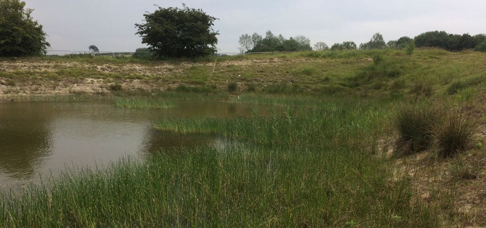

This is a draft protocol for a pond acoustic survey, allowing the underwater ‘soundscape’ to be recorded. It’s intended for use with a single recorder/hydrophone, and for short site visits. It’s therefore useful to be employed when gathering recordings from a number of ponds within a region, and/or for repeat visits to a single waterbody.
The protocol sets out a standard for recording at the pond, and collection of associated environmental data that can be used to help interpret recordings. The environmental data is based on existing systems already implemented in the UK, and should allow comparison with these other datasets.
We welcome testing of the method - and any contributions or comments on how to improve it.
Carlos Abrahams @abr_eco
Jack Greenhalgh @crayfishjack
